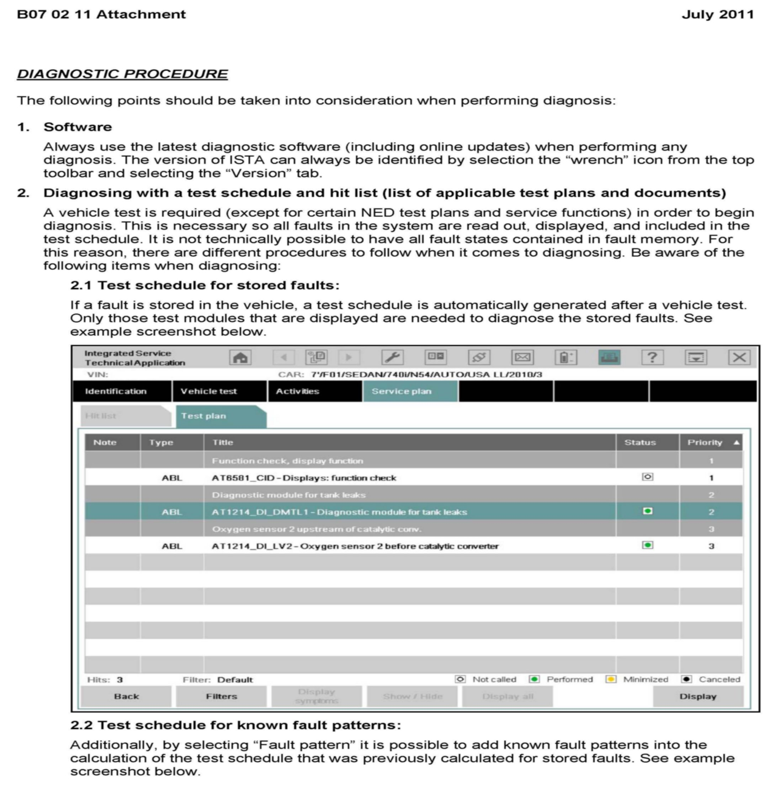
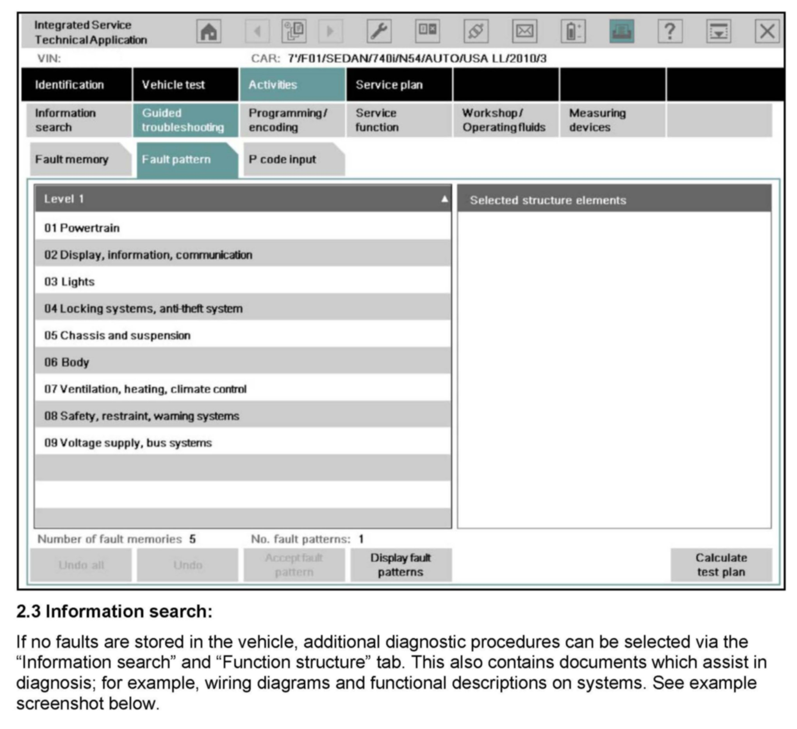
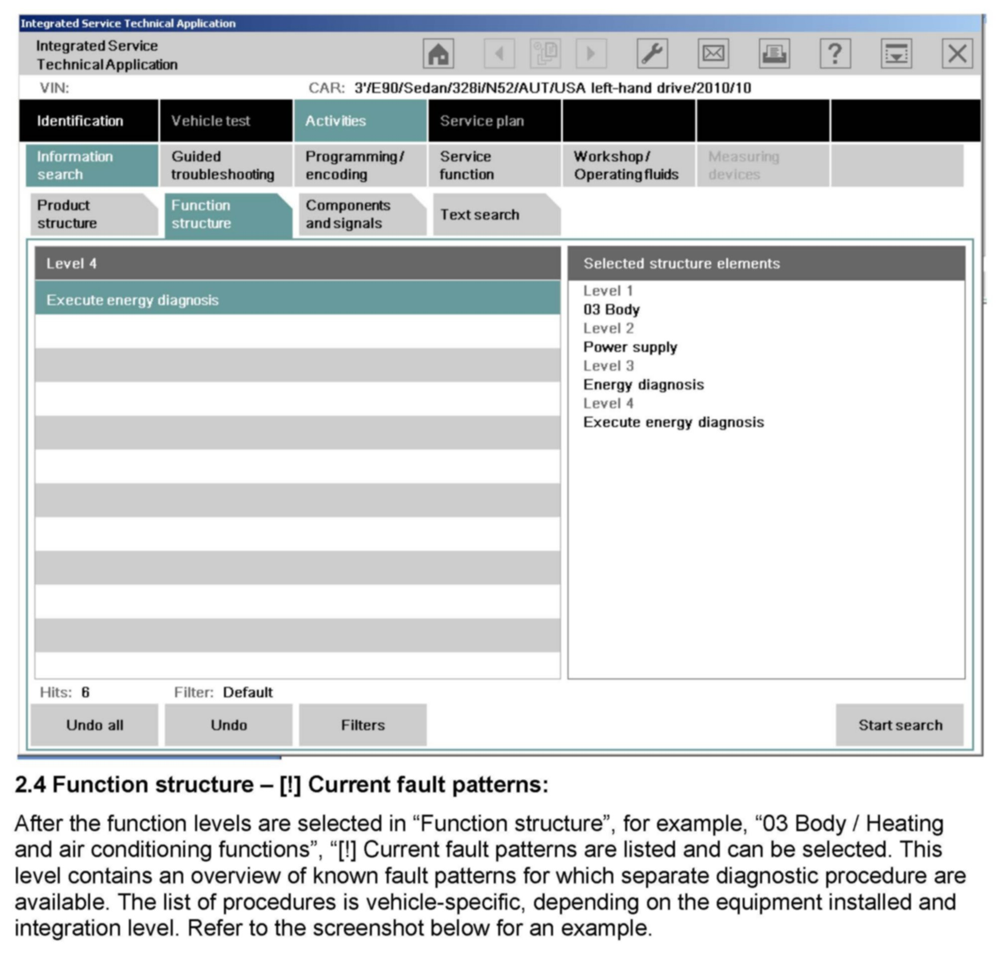
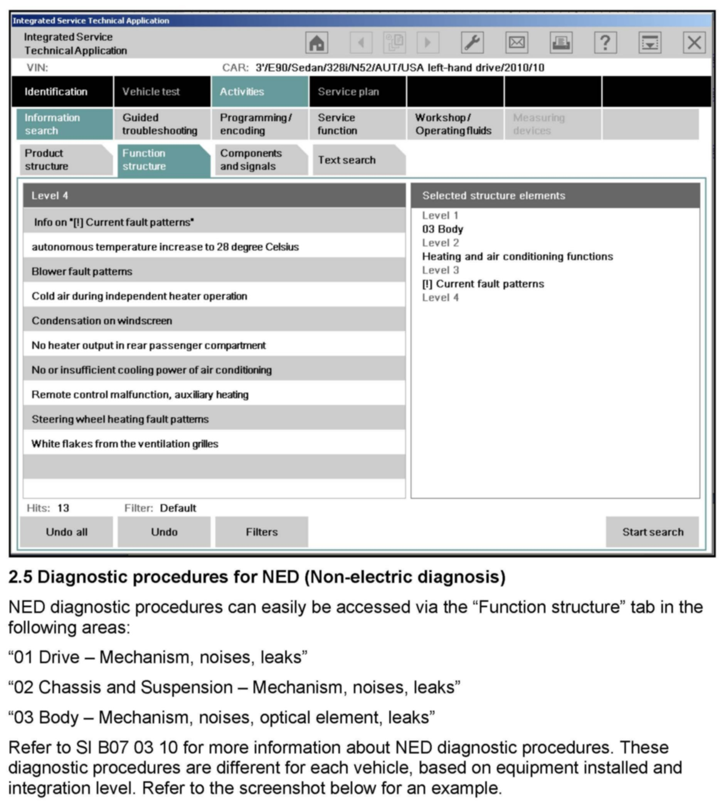
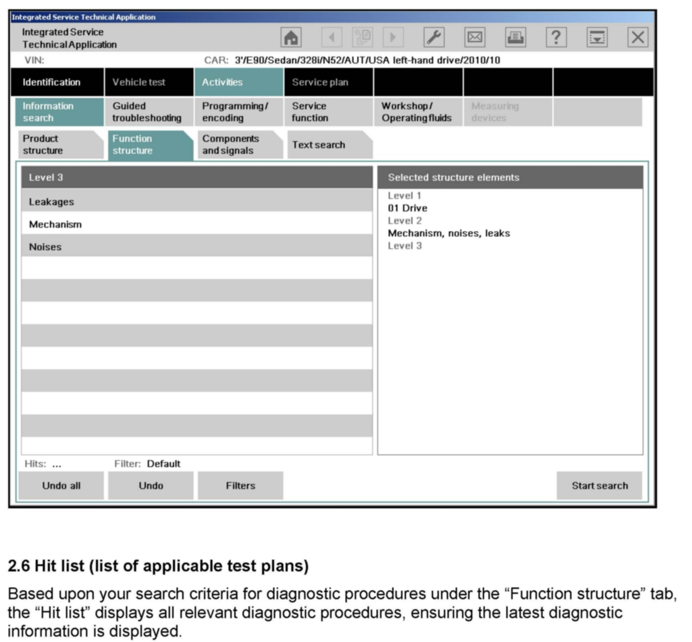
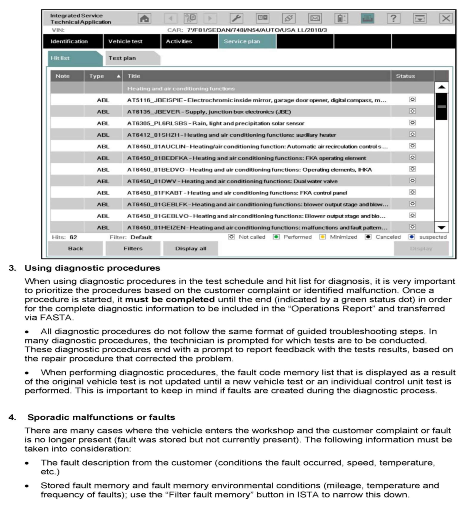
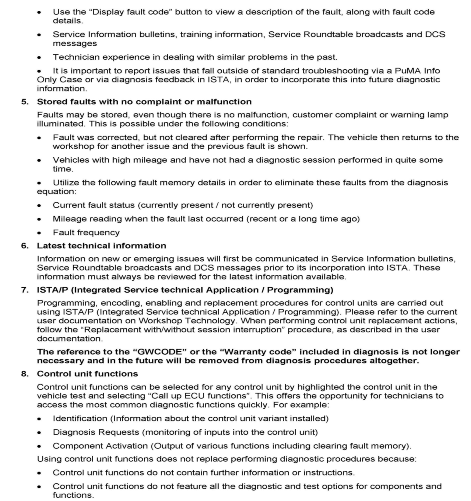
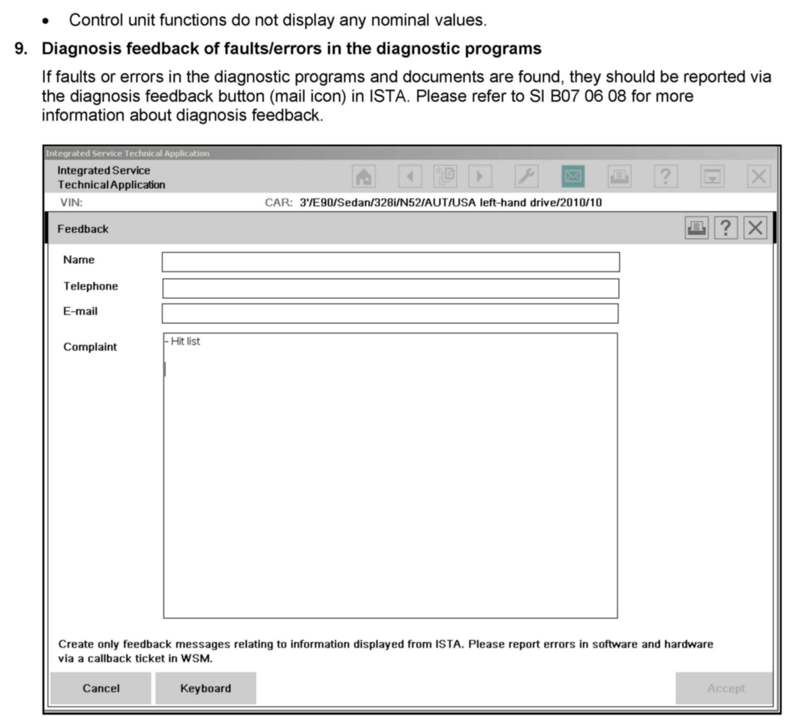

Compuetrs/Controls - Recommended Diagnostic Procedures
SI B07 02 11Workshop Environment Systems
July 2011
Technical Service
SUBJECT
Recommended Diagnostic Procedures
MODEL
All
INFORMATION
Information and test plans in ISTA (Integrated Service Technical Application) are provided to assist the technician in troubleshooting. Diagnostic test plans are available for electrical and electromechanical vehicle systems, as well as selected mechanical systems (NED; Non-electric Diagnosis). Some electrical components and electromechanical systems do not require test plans to be performed for reimbursement via warranty.
The purpose of this bulletin is to provide:
^ Information on when diagnostic test plans are required/not required.
^ A recommended procedure on how to utilize the diagnostic information and test plans in ISTA.
Your knowledge and understanding of this information will result in efficient diagnostic procedures and warranty claim processing.
Within ISTA (D2.26 or later) detailed information can be found on:
^ Mechanical systems requiring diagnosis (NED): ISTA document "Contents Non-electric Diagnosis (NED)".
^ Electrical or electromechanical systems require no diagnosis: ISTA document "Contents Diagnosis", chapter "Component Repair without Diagnosis." Some items are:
^ Faulty bulbs (except xenon and LED)
^ Items with visual defects
^ Electrical components with broken retaining elements
^ Items damaged by water ingress or thermal event (excluding control units)
^ Mechanical engine components with leaks or mechanical damage
^ Display devices with visual or mechanical defects
^ Inoperative horns, cigarette lighters or power sockets
These documents can always be called up in ISTA via "News", and are updated with each ISTA version.
These documents are automatically displayed on the ISTA home screen when ISTA is first opened.
Utilize ISTA whenever:
a. A fault is stored, but the fault cause is not clearly identifiable.
b. A fault causes an indicator warning lamp to illuminate.
c. A fault lies within a mechanical system, and the fault cause cannot be clearly identified.
d. A fault lies within a mechanical system, and the repair is too costly. For example replacing the entire panoramic sunroof as opposed to installing a repair kit.
e. TeileClearing is active for the component requiring replacement.
PROCEDURE
Refer the attachment to this service information for more information on diagnostic procedures.
WARRANTY INFORMATION
This Service Information bulletin is intended to provide technical, diagnostic and/or repair process information only.
If an eligible warranty claim is a result of this process, submit by following the regular claim procedures that apply.
Please refer to the Warranty Policy and Procedures Manual regarding proper support, documentation and archiving requirement for claims, as applicable.
ATTACHMENTS








B07 02 11 - Procedure